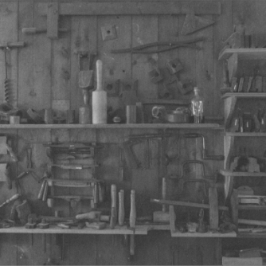
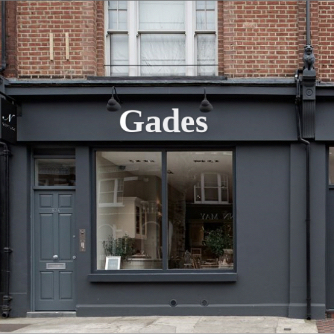
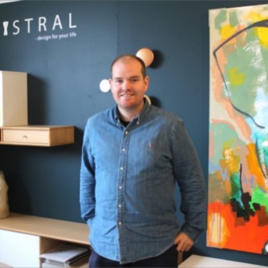

1890 - Peter Gade
Det hele startede, da Peter Gade i 1890, startede sit
snedkerværksted i Nørregade i Ålborg.
Han blev hurtigt anerkendt for sit arbejde
og sin høje kvalitet. Glæden for møbler
i familien startede her og ville forsætte i over 100 år.

1940 - Jens Martin Gade
Jens Gade overtog sin fars snedkerværksted
i 1940. Da glæden for møbler lå i familien,
var dette et naturligt skridt for Jens.
Han blev en meget anderkendt snedker,
med fokus på høj kvalitet. I sammenhæng
med snedkerværkstedet, startede han en butik
hvor han kunne vise flere møbler frem end før.
Han fulgte sin fars fodspor og vider gav
glæden for møbler til sin søn,
så også han en dag ville kunne starte sit
eget værksted.

1964 - Jørgen Gade
Med glæden for møbler og kvalitet, i familien var det naturligt for
Jørgen, at starte en lille Møbelforretning, i en baggård ved Nørregade.
Efter ca. 10 år flyttede Jørgen forretningen til Niels ebbens gade,
hvorefter han igen flyttede butikken til city syd i 1977.
Her ligger butikken stadig og den er kendt som Gades Møbelcenter.
Dog har butikken fået nye ejere den dag idag.
Igennem de mange års salg af
højkvalitets møbler, blev Jørgen en
meget anderkendt specialist inden
for branchen.

Martin og Annette Gade
Glæden for møbler og kvalitet fortsætter dog. Igennem 5 generationer
med sammenlagt 100 års erfaring, har jeg Martin Gade, i 2015 startet forretningen
Gades Møbelhus sammen med min mor Annette (4. generation).
Hos Gades Møbelhus gør vi brug af mange generationers glæde,
viden og erfaring om møbler og kvalitet. Med denne viden har vi skabt et nyt
koncept, hvor vi sælger møbler til alle i hele Danmark ved hjælp af online handel.